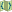
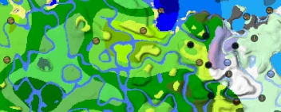

Datapack map
A map to display Minecraft biome layout, terrain, and structure locations of Minecraft worlds. Made
deliberately to support custom worldgen datapacks, such as Terralith.
Help Translate
Datapack Compatability (Wiki)
View Source on GitHub